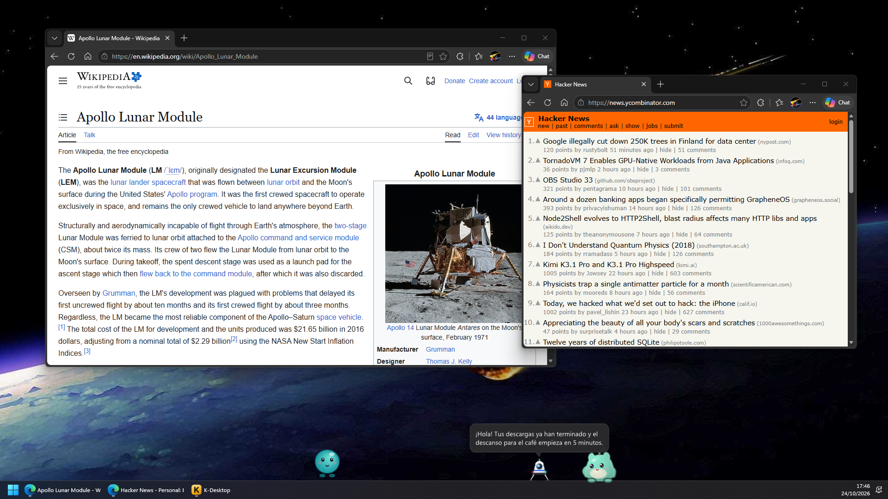
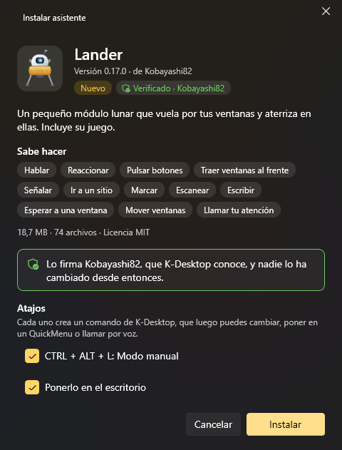
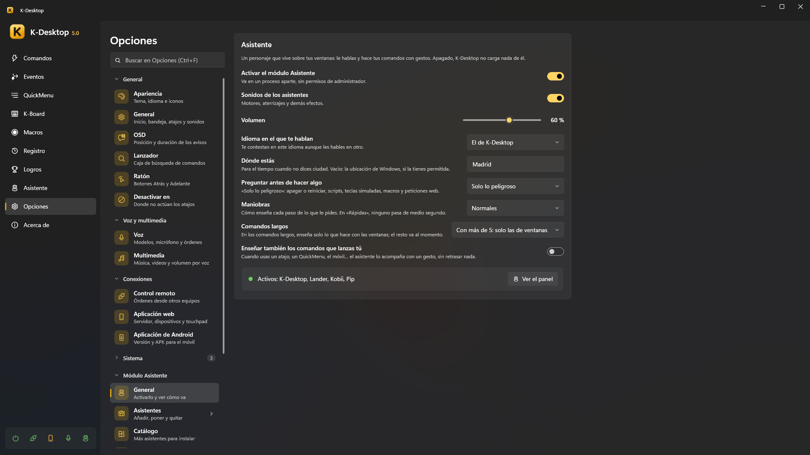

Asistentes
Un asistente es un personaje que vive encima de tus ventanas. Anda o vuela, reacciona a lo que pasa en el PC y se le puede hablar: «Lander, minimiza Chrome», «Kobii, ¿qué tiempo hará mañana?». Cuando ejecuta uno de tus comandos, cada paso se ve: el Lander vuela hasta el botón de minimizar y le dispara, y la ventana se minimiza justo en el impacto.

Note
El módulo Asistente es opcional. Mientras está apagado, K-Desktop no carga nada de él y funciona igual que sin él.
Los asistentes
| Asistente | Qué es |
|---|---|
| Lander | Un pequeño módulo lunar que vuela entre tus ventanas, se posa en ellas, las remolca con un gancho y tiene su propio juego (modo manual, misiones, carreras) |
| Kobii | Una criaturita que anda, trepa por tus ventanas, juega, come, duerme y se deja acariciar, cepillar o chocar los cinco |
| Kumo | Una nube blandita que flota, envuelve las ventanas para llevarlas, llueve, hace arcoíris y baila con tu música |
| K-Desktop | El asistente incluido, sin personaje, para cuando quieres respuestas sin nadie en el escritorio |
Puede haber varios a la vez en el escritorio; cada uno tiene su palabra de activación, su tecla para hablarle, su idioma, su personalidad, su voz y hasta su propio modelo de IA.
Encenderlo e instalar uno
Opciones → Asistente → General → Activar el módulo Asistente.
Opciones → Asistente → Catálogo: cada asistente con sus vídeos, lo que sabe hacer e Instalar…. También puedes abrir un paquete
.kaicon doble clic, o usar Asistentes → Añadir asistente.La ficha de instalación enseña qué es, qué sabe hacer y quién lo firma, y ofrece grabar su nombre como palabra de activación, crear comandos para sus atajos y descargar el modelo de IA que sugiere.

Pulsa Instalar.
Una versión nueva se instala encima de la anterior y se cambia en caliente, conservando los datos del asistente
(%APPDATA%\K-Desktop 5\Assistants\Data\<id>, incluidos en las copias de seguridad). Los asistentes instalados avisan
cuando hay una versión nueva (Opciones → Actualizaciones): siempre se ofrece, nunca se instala sin preguntar.
Paquetes firmados
La ficha dice quién ha firmado un paquete:
| Enseña | Significa |
|---|---|
| Verificado · nombre | Firmado con una clave que K-Desktop conoce (los asistentes del propio K-Desktop) |
| Firmado por «nombre» | Firmado con otra clave: el nombre es solo lo que dice el paquete, pero las actualizaciones tienen que venir con la misma clave |
| Sin firma | Sin firma: se instala, con el aviso de siempre |
| (no se instala) | La firma no cuadra: algo del paquete ha cambiado después de firmarlo |
Si una actualización la firma otro distinto que la versión que tienes, la ficha avisa en rojo.
Su ficha
En Opciones → Asistente → Asistentes, cada asistente tiene su página:

Poner en el escritorio / Esconder (Activar / Desactivar en K-Desktop).
Básico: su palabra de activación, su tecla para hablarle, el modelo con el que piensa (y con el que piensa más), y los ajustes que comparten todos los asistentes —tamaño, volumen, lo movido que es (cuánto se mueve por su cuenta) y si se puede coger con el ratón— además de «Usar siempre el bocadillo de K-Desktop».
Personalidad: otro idioma y otra personalidad para este asistente.
Voz: quién habla (Kokoro, Piper, Windows…) con solo los ajustes de ese motor, su perfil, y su velocidad y volumen propios.
Probar: el asistente en un pequeño escritorio de mentira para él solo, haciendo cada cosa que sabe enseñar (sus animaciones, entradas y salidas, estados, reacciones, gestos, lo que le hace a una ventana). Nada de eso toca tu escritorio.

Debajo, en otra fila, sus propias páginas (de su paquete): las opciones del juego del Lander, el color de Kobii…
Lo que no se cambia se queda en Global: lo de Opciones → Asistente para todos.
Panel → Asistente enseña cada asistente con lo que está haciendo y su modelo en una línea, y dos pestañas: Conversación (el chat, su Actividad —lo que ha hecho, con deshacer; Todos enseña la de todos— y los detalles técnicos) y Panel de … (puntuaciones, logros, botones), que se ve también cuando no está en el escritorio.

Hablarle
| Cómo | |
|---|---|
| Su palabra de activación | «Lander, …». Se graba en su ficha; cada asistente tiene la suya |
| Su tecla para hablarle | Mantenla pulsada y habla (cada asistente puede tener una) |
| Clic mantenido | Mantén el botón izquierdo sobre él medio segundo y habla |
| Por escrito | Clic central sobre él, o Escribir a … en su menú del botón derecho, abre una caja; o el chat de Panel → Asistente |
| Móvil | La pestaña Asistente de la aplicación web, por escrito o hablando |
| Comandos | Asistente: preguntar le manda un texto (o abre la caja para escribirle); la respuesta se puede decir, pegar en lugar de la selección, copiar, ver en una hoja o guardar en {resultado} |
Su menú del botón derecho tiene Escribir a …, sus acciones propias (extras), su panel, sus ajustes y Esconder.
Soltarle archivos encima (desde el Explorador) abre una ventanita: «¿Qué hago con «archivo»?», con sugerencias según el tipo (resumir o leer un documento, decir qué es una imagen o leer su texto, resumir un audio o pasarlo a texto, ver qué hay en una carpeta, abrirlo…) o lo que le digas tú.
Qué pasa cuando le pides algo
- Primero las frases fijas, sin IA: «¿qué hora es?», «pon un temporizador de 10 minutos», «recuerda que…», «abre youtube.com», «¿qué suena?», «¿qué tiempo hará mañana?», «descarga el cerebro»… Contestan al momento.
- Tus comandos: si lo que has dicho nombra claramente uno de tus comandos, se ejecuta (con sus gestos).
- Si no, contesta la IA, eligiendo entre sus herramientas las que vienen a cuento.
Lo arriesgado (cerrar programas, borrar archivos, apagar) pregunta antes con una ventanita, también de palabra («sí» / «no» / «sí, y no vuelvas a preguntar»). Opciones → Asistente → General → Preguntar antes de hacer algo lo decide: nunca, solo lo peligroso, o también la primera vez.
Gestos y rapidez
Opciones → Asistente → General:
- Maniobras: Vistosas, Normales o Rápidas (menos de medio segundo).
- Comandos largos: en los comandos con muchas acciones, solo enseña lo que hace con las ventanas; lo demás pasa al momento.
- Enseñar también los comandos que lanzas tú: los comandos lanzados con un atajo, un QuickMenu, el móvil… también se enseñan con un gesto, de adorno, sin retrasar nada.